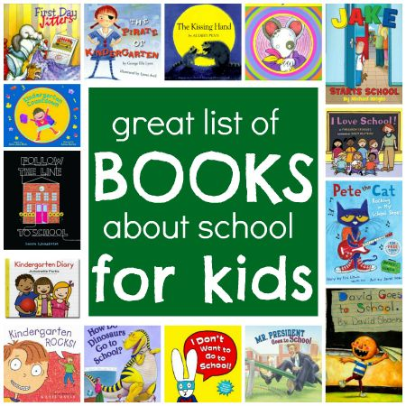
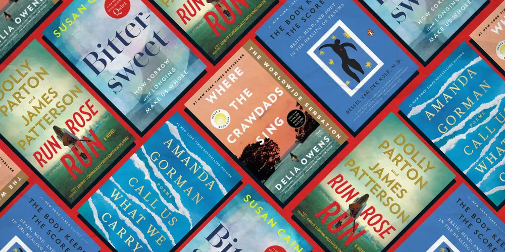

BIOGRAPHY
A gorgeously illustrated retrospective of the Black folk artist who died in 2021, plus a wrenching memoir of the Jim Crow South. A peer of the great Mose Tolliver, Rembert grew up in rural Cuthbert, Georgia. His vibrant canvases evoke the honky-tonks of Hamilton Avenue, convicts laboring in sun-scorched fields.
GENERAL NONFICTION
Andrea Elliott, a reporter at The New York Times, began chronicling Dasani's life in 2012, having met the 11-year-old girl in the homeless shelter she'd moved to in Fort Greene, Brooklyn. In her Pulitzer-winning Invisible Child, Elliott writes unsparingly about the realities of life in shelters and the trajectory of children in that setting. Through the history of one family, Elliot examines how racial and economic disparities produce generational poverty. She puts a face to statistics and, in doing so, challenges our assumptions about poverty and resilience.
HISTORY
A historian vividly recreates a fateful crime in 1722, when two white men assaulted an Indigenous hunter in Pennsylvania, just as British colonists and Iroquois leaders were sketching a treaty for an uneasy peace. From the aftermath of this little-known event emerges fixed notions of crime and punishment, the burning question of whose thumb commands the scales of justice. It's equal parts true-crime page-turner and an essential contribution to the canon of our history.
HISTORY
Ada Ferrer is a historian and a child of Cuban immigrants who fled to Miami in the 1960s. From the first Spanish settlement, the slave trade, and the Bay of Pigs Invasion in 1961 to Cuba’s influence in African countries, she writes a nuanced story of the complex history between Cuba and The United States. Ferrer’s comprehensive exploration of Cuba, the Cuban people, and the shifting relationship with the United States helps us understand both countries’s histories and the ties that continue to bind them together.
POETRY
In her lithe, unsparing fifth collection, poet Diane Seuss reimagines the sonnet as conversational confession, dispensing with strictures of rhyme to probe the burdens of love and selfhood, the compulsion to see art as a whole, with images playfully plucked from everyday life. “Intimacy unhinged,” she writes. “Believe me, I didn’t want it anymore. Who in their/right mind? And then it came like an ice cream truck/with its weird tinkling music, its sweet frost.”
As we slowly ooze out of August and into the cooler, contemplative months ahead, it’s not a bad idea to orient ourselves with the writings of people who have already done the hard work of mapping out life’s infinite possibilities (and, in some cases, impossibilities — you have no idea how hard it is to communicate with whales and aliens). These books, including memoirs by Kate Beaton and Sofia Samatar; novels by Percival Everett, Alisa Ganieva, and Cormac McCarthy; and poetry by Rio Cortez, Franny Choi, and Courtney Faye Taylor, will hopefully get you where you need to be going, mentally or emotionally. Brace yourself this cozy season.
|  | The first days of back-to-school can truly set the stage for the entire school year with students. And read-aloud books are a perfect way to get to know one another, encourage class discussions, and figure out which values will define your class’s identity. Here are 46 of our favorite back-to-school books plus follow-up activities for each one. Does your kid need a bit more inspiration to get in the mood for the first day of school? Instead of trying yet another pep talk, why not suggest a book? Authors have long found inspiration in the beginning of a new school year, but a good book can do more than just entertain: It can remind our little readers that any of their own struggles, separation anxieties, and first-day-of-school fears are totally normal. Another reason authors find school to be such a compelling setting? It’s also a place where kids are doing way more than just learning. Most of the books on our list go beyond just the jitters of the first day of school to look at the social issues kids confront every day. For help finding a round-up of fun, diverse books that will appeal to all age levels, we did what any smart parent would do: Ask the librarians. Betsy Bird is a librarian and author of The Great Santa Stakeout . The Cooperative Children’s Book Center is part of the University of Wisconsin-Madison’s library school and releases an annual best-of list of books for kids and parents. Their recommendations come from past publications of CCBC Choices. We also consulted best-seller lists to find a few of our fan-favorite picks. From books that follow nervous kindergarteners all the way to high schoolers taking stands against systematic injustice, there are books for every grade level and reader in our roundup ahead. Our mission at SheKnows is to empower and inspire women, and we only feature products we think you’ll love as much as we do. Please note that if you purchase something by clicking on a link within this story, we may receive a small commission of the sale. A version of this story was first published in 2019. |
|  |